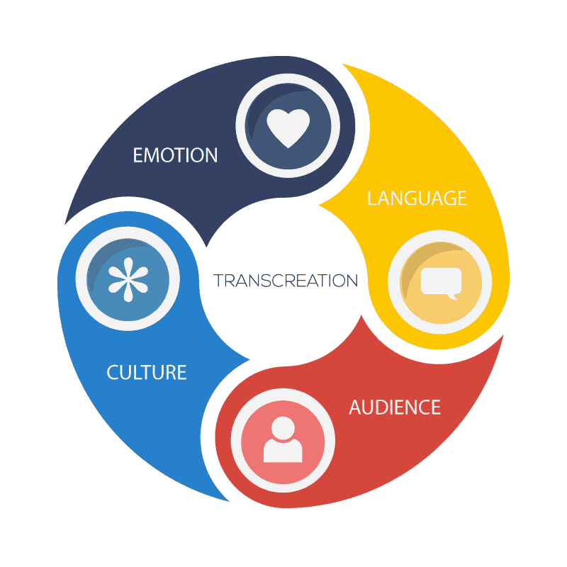

Transcreation is, from a certain perspective, the highest form of translation. Content native to your own language is not simply translated – it becomes a new text, one completely native to the target language. The transcreation process empowers you to connect to a foreign target audience in ways that would otherwise simply not be possible. Transcreation is the single most effective way to retain your message and focus when they cross cultural and linguistic borders. That’s precisely because the transcreation process means changing the words in which ideas are expressed to give them emotional impact in a new context. The transcreated content is designed to bring into play the (often very different) lexicon, phraseology, imagery and sequencing that will resonate most powerfully for the people you need to receive your message. Ultimately, transcreation is the art of talking to your audience in their internal language, so that they really hear what you have to say.
Transcreation is particularly powerful when it comes to international (global) marketing. Slogans, taglines and other elements of marketing copy cannot be simply translated; your message can achieve its purpose only when it is recast in terms that have intrinsic meaning for another culture and language. All kinds of branded materials, including brochures and entire web sites, can be transcreated. And that makes it possible to introduce your content into a foreign market with maximum effect. PoliLingua’s transcreation services enable you reach foreign audiences in ways you never thought possible. We are a creative transcreation agency built to give you the power not just to reach out to people in their own languages, but also to tap into their common cultural expectations and preferences– a strategic key to effective global marketing. You might want to tailor your message for several foreign cultures to localize foreign customers’ experience on your web site. Or you might need to vault potential new customers’ awareness of a product or service in a foreign market to new heights. In all these cases, whatever your global marketing and advertising goals, transcreation is a crucial tool for success.
Our transcreation experts are native speakers of the language of your target market, completely at home in its culture and business environment. They are also experienced copywriters, too, with a mastery of their country’s marketing language and style. We work with you and your partners so you remain confident that your materials are correctly targeted to create the results you want, and our competitive transcreation rates make the process easy. The PoliLingua team is designed to make you fluent in countries and cultures around the world, in every case providing you with the ideal transcreation experience. We’re here to help you achieve your goals around the world. Call us, ask a question, request a quote! Global success is a phone call away.